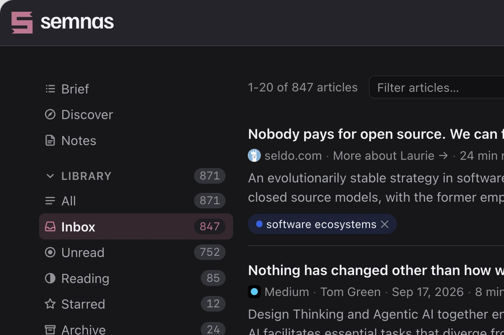
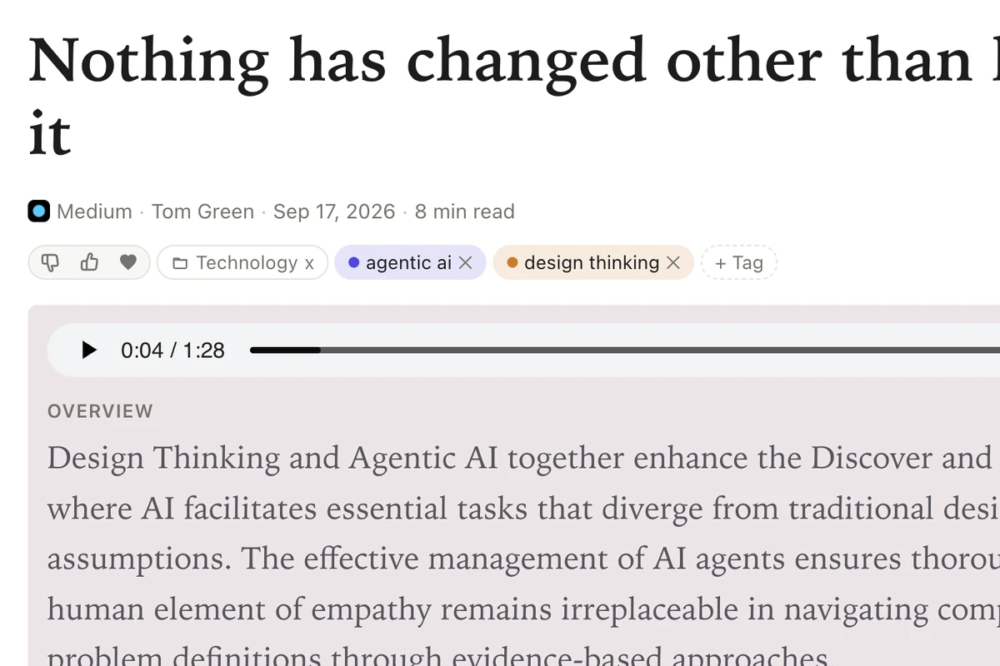
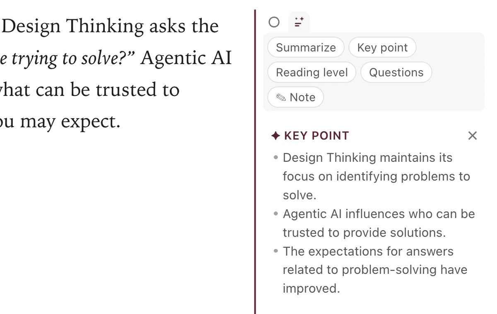
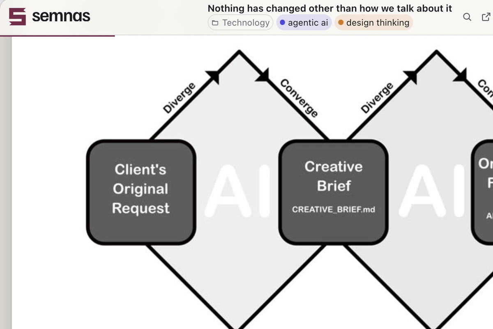
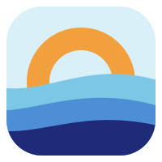

The IDE reinvented for AI. Agent-first by design: plan with acceptance criteria, build against the live running app, and every change is verified before it commits. Built-in tests and audits, on a formally specified kernel.
AI Engineering
From AI prototypes to production systems.
I help teams adopt AI and put it to work: from the first prototype to systems that hold up in production, and the team workflows that make it stick. Startup founder (SpeedInvest · Expa · Antler) and CTO for 5+ years — I take the work from strategy all the way to implementation.
/Prototype & build
AI prototypes built quickly to prove the value, then hardened for production (agentic systems, orchestration, evals and guardrails).
/Integrate
Connect AI to your platform: MCP servers, Claude and ChatGPT apps, plugins and extensions, API and tool integrations.
/Adopt & enable
AI adoption strategy and hands-on training for your team. AI coding, agentic development and new ways of working.
/Knowledge & workflows
Knowledge bases and automated workflows that put your company's data and processes to work.
Over two decades building production software as an engineer, architect, CTO and founder, now focused on applied AI. I work with teams on scoped, project-based engagements, whether they're starting out with AI or scaling what they already have.
Founder at OpenTide.ai and Head of AI Engineering at OLBG. Previously founder at Genie. Creator of Genie Framework. Postgraduate diploma in AI & Deep Learning, UPC Barcelona. Master's degree in Advanced Computer Science, University of Liverpool.
Agentic systemsLLM orchestrationContext engineering
MCPAI codingClaude
PyTorchPythonTypeScript
Deep learningAI strategy
My work
What I'm building — for my clients and the open-source community.
Products








Read-later app built around AI. Every article you save gets a summary, key points and an audio version you can listen to, and you can ask it questions. A recommender learns what you read and fills your Discover feed and daily Brief.
YouKaraoke
AI music analysis and stem extraction on self-hosted models: takes songs via the YouTube API, splits them into instrument and vocal stems, detects tempo, key and song sections, and transcribes the lyrics.
Open source
The highly productive web framework for Julia. An ecosystem of 15+ open-source packages spanning servers, reactive UIs, ORM, and deployment. Grown to thousands of users across academia and industry.

OpenTideThe web framework for AI agents. Agents build and change a running app through gated MCP tools. Each change is a typed mutation, verified before it commits and kept in an append-only log you can roll back. Token-efficient by design: agents work on precise app entities instead of reading entire codebases.
Genie Agents
Agentic system that generates Genie applications from custom-trained models. EU grant-funded, and my on-ramp from framework tooling into AI engineering.
Genie Builder
Visual UI builder with a low-code Julia backend and a built-in AI assistant, so developers ship data apps without the boilerplate.
AI at OLBG
Worktron
Agent-orchestration platform running autonomous agents in production. Agents audit code for security and SEO and run competitive analysis, triggered on pull requests or on a schedule. Model-independent: works with Anthropic, OpenAI, Kimi, DeepSeek and more.
OLBG.brain
AI-driven knowledge management for teams, as a Claude extension. Versioned notes, decisions and skills with role-based sharing; Claude turns repeated procedures into skills teams can promote, and flags leaked credentials and duplicates.
OLBG AI Search
AI answers at the top of OLBG’s site search: live tips with odds, tip counts and links to the matching pages, shown above the regular results. Powered by RAG over the site’s content, local classification models and hosted LLM APIs.
OLBG Bot
The OLBG Tips Bot: ask in plain language for tips, tipsters or odds, and get answers built from the site’s live data, returned as rich tip and tipster cards. Combines retrieval, in-house classifiers and AI APIs to understand each question.
Client work
Nextmol
MCP server and Claude plugin that connect a computational-chemistry platform and its API to Claude, so researchers can drive the platform directly from AI.
Neuroblox
The interactive UI for a neural-circuit simulation platform, used by neuroscientists to model brain interventions in silico.
Quantum Savory Studio
Visual studio for designing and simulating quantum networks on the QuantumSavory toolkit: place nodes on a map, configure slots and protocols, and run simulations.
Work experience
2025 — now
2025 — now
Head of AI Engineering
OLBG — UK sports-media & betting affiliate platform
Leading AI adoption and engineering across a high-traffic, regulated product.
2019 — 2025
Co-founder
Genie — Amsterdam / Barcelona
Founded and led a venture-backed developer-tooling company around the Genie Framework.
2013 — 2019
CTO
OLBG — Bristol, UK
Built the engineering team and the product platform from the ground up: a remote-first team across web, mobile, design and DevOps, shipping the products behind the company’s growth.
2011 — 2013
CTO / Founder
Aprefis (Washington DC / Miami) & Advidi (Amsterdam)
Built products from zero and scaled revenue systems.
Earlier — Team lead and web developer roles across Bristol and Bucharest (2000–2011), building and leading web product teams in PHP and JavaScript.
Writing & speaking
Books
- 2022Web Development with Julia and Genie Co-author · Packt
- 2019Julia 1.0 Programming Complete Reference Guide Co-author · Packt
- 2018Julia Programming Projects Author · Packt
Talks & community
- 2017—24JuliaConSpeaker / organizer — Berkeley, London, Baltimore, Eindhoven
- 2016—25Barcelona Julia Users GroupOrganizer
- 2015—17IronHack BarcelonaMentor & trainer
Education
- 2025 — 26Postgraduate Diploma, AI & Deep LearningUniversitat Politècnica de Catalunya (UPC), Barcelona
- 2018 — 20MSc Advanced Computer ScienceUniversity of Liverpool
- 2016, 18Certified Scrum MasterScrum Alliance
- 2007 — 09MSc Computing (Cybersecurity)University of Bucharest
Let's talk
Trying to get AI from prototype to production, or want a senior pair of hands who can architect and build?
Show email address